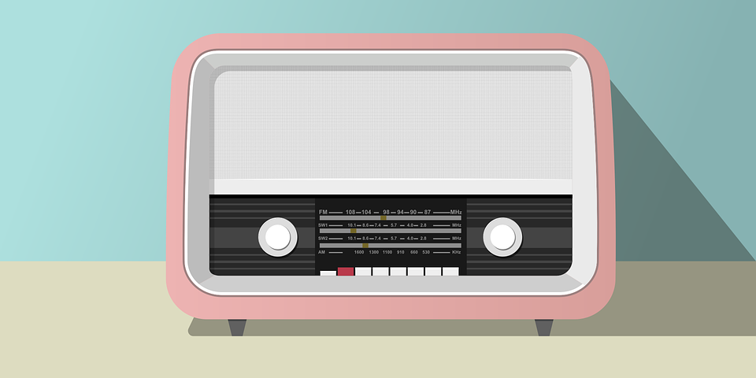

gRPC Vulnerable CRUD Application
This was a project done to understand the working of gRPC. I developed a vulnerable application with some gRPC specific vulnerabilities that can be exploited to enhance my team's DAST skills. To reinforce the learning, I also created a CTF challenge for the team.
E-Authentication Using QR Code and OTP
This was my final year Capstone project. In this, we developed an authentication system which uses dynamicallly generated QR Code or OTP for user authentication. We used Django as our development platform since we wanted to expand our knowledge in this platform.
Github Repo
Cybercrime: How To Deal With It
This was a research and development project in my 6th Semester. In this project, we tried to analyze the different factors that lead to commiting of cybercrimes across the globe. We also conducted a survey and proposed some solutions to the panel.

Robust and Hybrid Video Watermarking using SVD, DWT and Frame Difference
This was also a final year project in Machine Learning. We developed a Python script which would use various OpenCV libraries and watermark videos using SVD, DWT and Frame Differences.
Github Repo

Audio Bunny Radio Station
This was my Sem 6 project. In this project, we created a web application in which a user can tune into frequency-based radio channels and also listen to artist-specific radios.
Github Repo
Detecting Phishing Websites using Machine Learning
In this project, we created a web application in which a user can query our database and check whether a given URL is a phishing website or not.
Github Repo
Cinema Booking System
Created a web application using Java Servlets and JSP as part of our Advanced Java course. The web application allowed a user to login and perform booking for a movie.
Github Repo
Learn more about me >>